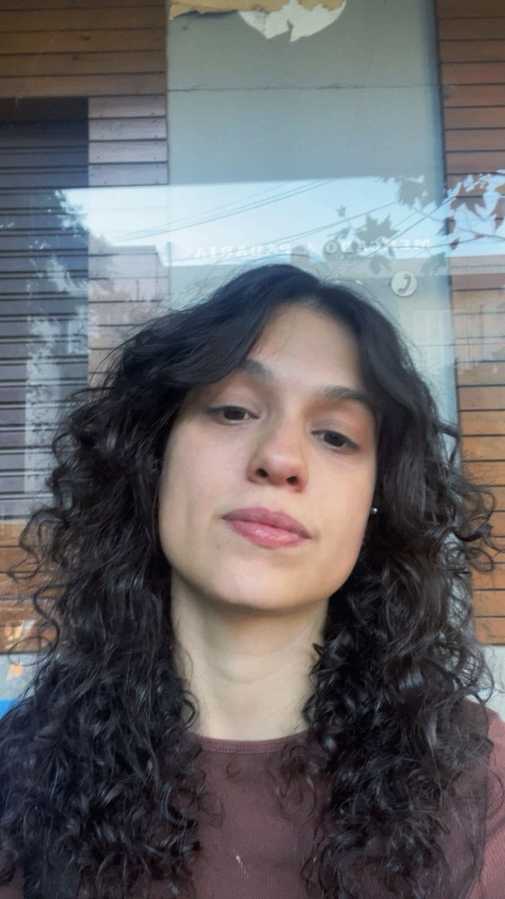

amo minha vó mais que tudo nesse mundo, ela é uma das pessoas mais importantes da minha vida; também sou completamente apaixonada pelos meus gatos: Nami, Lucius e Cícera, que fazem meus dias muito mais felizes. além disso, sou muito fã de Hunter x Hunter, um anime que carrego no coração.
mes chats
| nome | personalidade |
|---|---|
| Nami | lindinha da mae bagunceira |
| Lucius | carente mas amo muito |
| Cícera | brabona (mais velha) |
O que eu gosto de assistir
- Hunter x Hunter
- Studio Ghibl (qualquer filme)
- filmes muitos muitos ja assisti varios
video
1uer saber mais sobre o mim? so call me baby > 51982782373 HXH.